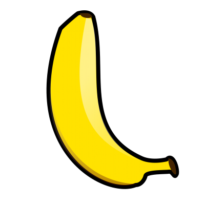

| Saying | setting | Rating (sjøbananer) |
|---|---|---|
| "Klånk" | Dette sier man sammen med et blunkt på det ene øyet, til en passelig tid. |  |
| "Ja, så var det det har da..." | Et desperat utrop etter medlidenhet fra et potensielt publikum i en situasjon hvor man sitter fast i en busk (eller andre ting) | |
| "Bensinstasjeen" | Et artig påfunn hvor "Tryggen" leker med ordet bensinstasjon. Dette kommer uventet på seeren og dermed framstiller latter | |
| "Mine hellige santana" | Utsangn som bli sagt i forbindelse med at man blir frelset av spirituelle figurer |